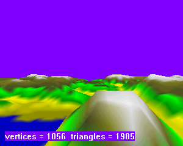
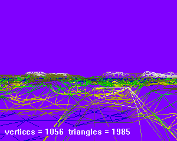
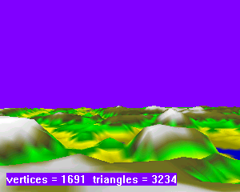
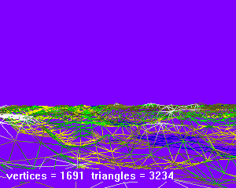

Terrain.h
A simple illustration of tessellation of a single terrain page. The height field is drawn using vertex colors that roughly correspond to altitude (blue = low altitude water, white = high altitude snow, and so on). You can change the error tolerance during program execution to see how that affects frame rate. The larger the tolerance, the more noticeable the popping.
|  |  |
|  |  |